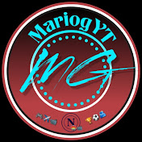

Chi sono

Reaction

I tornei di Mariog

Formula 1

Tifo Napoli da quando sono piccolo e, dal 2022, realizzo video reaction alle partite insieme a mio padre. Mi diverto molto a farle e sono stato fortunato: in quattro anni di video ho visto vincere due scudetti (stagione 2022/2023 e stagione 2024/2025). Possiamo quindi dire che l'apertura del mio canale abbia portato bene al Napoli, dato che non vinceva da trentatré anni prima che iniziassi. Spero di vederne molti altri e di continuare con quello che è ormai il mio marchio di fabbrica: le reaction.

Essendo un grande appassionato di calcio, ho praticato questo sport per dieci anni; purtroppo, a causa del Covid e degli impegni scolastici, sono stato costretto a smettere. Da qui è nata l'idea di organizzare dei tornei con i miei amici e di caricare tutte le partite sul mio canale YouTube. Nel 2023 ha preso vita la mia squadra, il Napoli Matches (NM), e proprio nell'estate di quell'anno ho inaugurato il primo torneo, denominato 'Five Champions League'.
Le quattro squadre partecipanti erano Napoli Matches, Barcellona, Bayern Monaco e Manchester City. Il format prevedeva semifinali (andata e ritorno), una finale e la finale per il 3° e 4° posto. Ogni compagine schierava cinque giocatori e, non avendo budget, ci siamo accontentati di un campo in terra battuta. Le semifinali hanno visto contrapposti Manchester City vs NM e Barcellona vs Bayern Monaco. All'andata i risultati sono stati: Manchester City 3-0 Napoli Matches e Barcellona 2-0 Bayern Monaco. Al ritorno, il NM è riuscito nell'impresa di ribaltare il punteggio (3-1 sul campo e 3-1 ai rigori), conquistando la finale; il Barcellona, invece, ha passato il turno vincendo 1-0 al ritorno (3-0 totale). Nella finalissima il Napoli Matches ha trionfato per 3-2 sul Barcellona, portando a casa il mio primo torneo.
Successivamente ho organizzato la 'Winter League 2023/2024', disputata sempre in un campo di terra e a calcio a 5. Questa volta abbiamo optato per un formato a campionato con classifica finale e sei partite per squadra. Le partecipanti erano Napoli Matches, PSG, Barcellona e Bayern Monaco. La classifica ha visto il PSG al primo posto, seguito da Barcellona, NM e Bayern Monaco. Essendo le vincitrici dei primi due tornei, PSG e NM si sono sfidate in una finale secca di Supercoppa. La partita è terminata 7-5 per il PSG, ma con una grande novità: abbiamo finalmente giocato su un campo in erba sintetica!
Dopo queste esperienze, ho deciso di abbandonare il calcio a 5 in favore del calcio a 7. Non avendo a disposizione campi in terra per sette giocatori, ci siamo trasferiti ufficialmente sul sintetico. Nell'estate 2024 è nato così il 'TAV Champions Trophy', un'evoluzione della Five Champions League con lo stesso format (semifinali e finale). Le squadre erano NM, Borussia Dortmund, Arsenal (eterna rivale del NM) e Real Madrid; il torneo si è concluso con la vittoria dell'Arsenal in finale sul Borussia Dortmund.
In inverno è seguita la 'Winter League 2024/2025', sempre a 7 e sul sintetico. A causa dei costi elevati, siamo passati da sei a tre partite per squadra. Il Borussia Dortmund ha vinto il torneo, seguito dal NM che ha chiuso al secondo posto a pari punti: purtroppo gli scontri diretti ci hanno penalizzato, vista la sconfitta per 1-0 contro il BVB. Al terzo posto si è classificato l'Arsenal, deludente dopo il successo precedente, e al quarto il Real Madrid. La Supercoppa tra Arsenal e Borussia Dortmund è stata poi vinta dai londinesi.
Infine, ho ufficializzato l'ultimo torneo: la 'TAV Master Cup', un format unico che univa la fase a campionato a quella a eliminazione diretta. Dopo sei partite, il NM ha dominato la classifica con 12 punti, seguito da Arsenal (9), Borussia Dortmund (7) e Real Madrid (6.5, a causa di una penalità di 0.5 punti). Come da regolamento, il NM è approdato direttamente in finale, attendendo la vincente della semifinale tra Arsenal e Borussia Dortmund. L'Arsenal ha vinto agevolmente, dando vita al 'Derby di TAV' per l'atto conclusivo. È stata una partita folle tra due squadre fortissime, ma a spuntarla è stato il Napoli Matches per 5-3. Si conclude così la storia dei miei tornei: la mia squadra ha vinto il primo e l'ultimo titolo... .


Oltre al calcio, in questi anni mi sono appassionato moltissimo alla Formula 1: ovviamente tifo Ferrari e il mio pilota preferito è Lewis Hamilton, a pari merito con Leclerc. Nel 2023 ho anche acquistato il gioco ufficiale della F1, su cui ho realizzato molti video, sia da solo che in compagnia; devo dire che sono i contenuti più divertenti da registrare dopo le reaction e i tornei. Man mano che giocavo sono migliorato e la passione è cresciuta sempre di più. Purtroppo, non avendo la PS5, la qualità dei contenuti non è progredita ulteriormente, infatti gioco ancora a F1 23, ma non fa nulla: l'importante è divertirsi. Inoltre, se con le reaction ho portato fortuna al Napoli (con due scudetti vinti), in Formula 1 la Ferrari deve ancora tornare a vincere un titolo... ma non importa, continuerò comunque a supportare la Rossa.